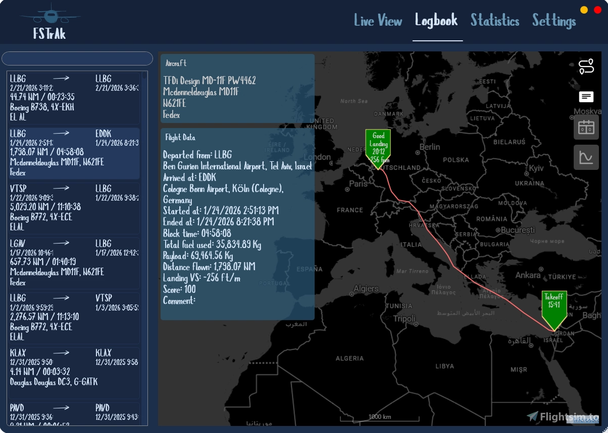
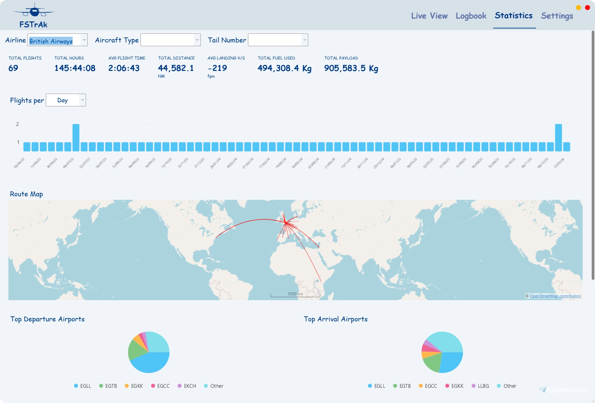

FSTRaK
Automatic flight tracker and logbook for Microsoft Flight Simulator. Install it once, forget it's there — FSTRaK silently monitors your flights, tracks them on a map, and saves them to a local logbook.
Automatic flight tracker and logbook for Microsoft Flight Simulator. Install it once, forget it's there — FSTRaK silently monitors your flights, tracks them on a map, and saves them to a local logbook.
Detects takeoff, flight, landing, and shutdown automatically. No buttons to press.
Every completed flight is saved to a local SQLite database with route, duration, distance, payload, and more.
Track your aircraft in real time on FAA ArcGIS, OpenAIP, MapTiler, Bing, OpenTopoMap, and more.
Review each flight with event markers, altitude/speed graphs, landing rate, and a scoring system.
Most-flown aircraft, airlines, airports, total distance, average and max payload, and more.
View live pilots and ATC on the map. Click any aircraft or controller for details, frequencies, and flight tracks.
Available as a toolbar panel (MSFS 2020 & 2024) or as an EFB tablet app (MSFS 2024). Shows your chart selection, live ATC coverage, and aircraft position inside the simulator.
Full dark theme support.
Starts with Windows, connects to MSFS automatically, and requires no manual intervention to track flights.


%LocalAppData%\Programs\FSTRaK by default.
Adds a moving map toolbar panel inside MSFS 2024 that mirrors your FSTRaK map, shows live ATC coverage, and tracks your aircraft position.
fstrak-ingame-panel and sits alongside the FSTRaK installer.
fstrak-ingame-panel into your MSFS 2024 Community folder:
%LocalAppData%\Packages\Microsoft.FlightSimulator_8wekyb3d8bbwe\LocalCache\Packages\Community%AppData%\Microsoft Flight Simulator\Packages\CommunityAdds the same moving map as a tablet app on the MSFS 2024 EFB home screen. Use this instead of, or alongside, the toolbar panel.
fstrak-efb-app and sits alongside the FSTRaK installer.
fstrak-efb-app into your MSFS 2024 Community folder:
%LocalAppData%\Packages\Microsoft.FlightSimulator_8wekyb3d8bbwe\LocalCache\Packages\Community%AppData%\Microsoft Flight Simulator\Packages\CommunityConfigure in FSTRaK → Settings.
| Key | Feature | Where to get it |
|---|---|---|
| StatSim | VATSIM full flight track history | statsim.net — login with VATSIM |
| IVAO API | IVAO flight tracks & enriched details | developer.ivao.aero |
| MapTiler | MapTiler map tiles | cloud.maptiler.com — free tier |
| OpenAIP | Aviation chart overlay | openaip.net — free registration |
| Azure Maps | Azure Maps tile layers | portal.azure.com — free tier |
| Component | License / Terms |
|---|---|
| VATSIM | Live network data used under VATSIM public data policy |
| IVAO | Live network data via IVAO public API |
| XAML Map Control | MS-PL — map rendering and tile layer management |
| Leaflet | BSD 2-Clause — in-sim panel map rendering |
| Newtonsoft.Json | MIT |
| Serilog | Apache 2.0 — structured logging |
| Entity Framework 6 | Apache 2.0 — database ORM |
| System.Data.SQLite | Public domain — SQLite database |
| LiveCharts | MIT — flight analysis charts |
| OpenAIP | Aviation chart overlay — requires free API key |
| OpenTopoMap | CC-BY-SA — topographic map tiles |
| OpenStreetMap contributors | ODbL — base map data |
| StatSim | VATSIM flight track history — requires API key |
| SimAware TRACON Project | TRACON boundary polygon data |
| VATSpy Data Project | FIR/UIR boundary data |
| OurAirports | Airport database (airports.csv) |